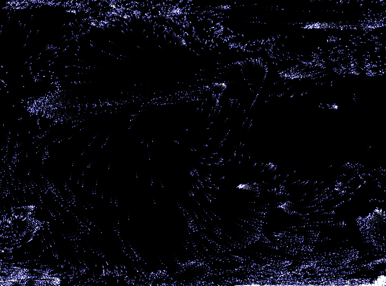
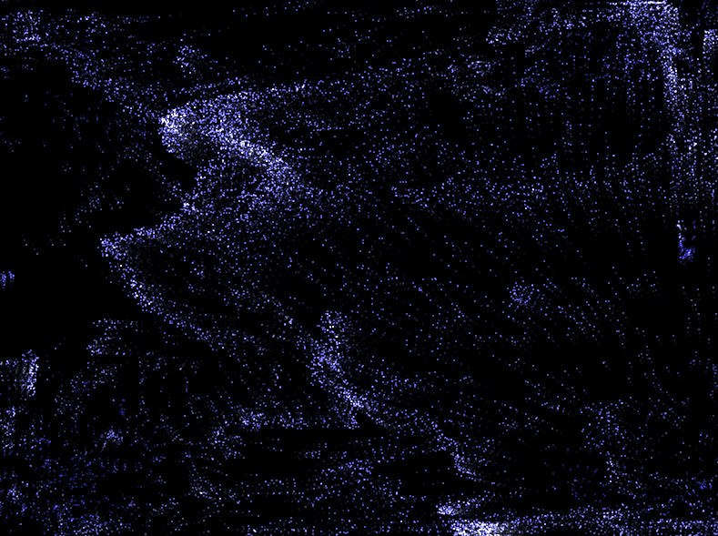
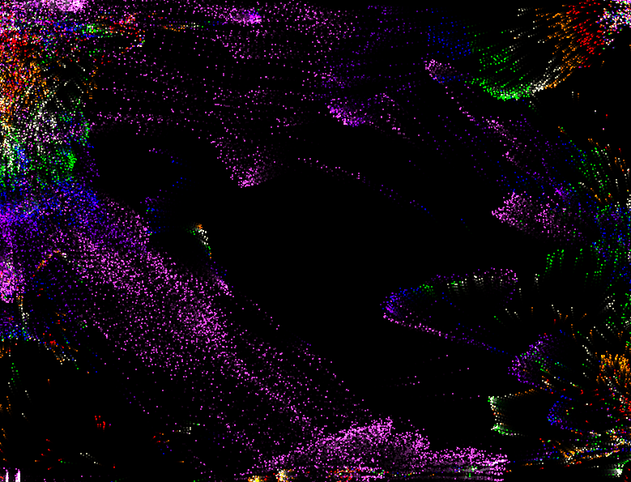

my small contribution is simply learning how to translate these effects in coffeescript so I can more easily read and understand them, and adding a few color palettes (they run slower).
Even that effort is mostly the work of
js2coffee (with generous 2 space replacements with tabs)
it didn't quite start up after conversion without inspecting the element.
The relevant CoffeeScript source:
Contact
Mark Essel (messel@gmail.com)
Download
You can download this project in either
zip or
tar formats.
You can also clone the project with Git
by running:
$ git clone git://github.com/victusfate/html5_chaos